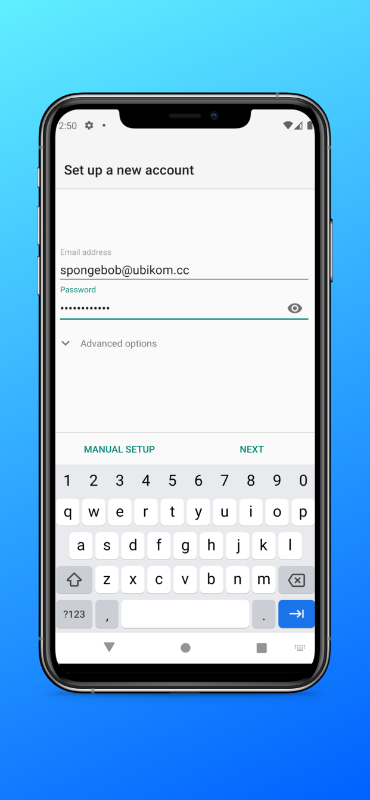

Unlike iOS, Android does not have an email app (apart from GMail) packaged with the system. You will have to install one of the following clients to be able to use Ubikom Mail.
From the identity details page, you must have at least the following:
If your client does not support automatic configuration, you will also need these:
We recommend Blue Mail because it's a great email client, it works on any platform (mobile and desktop), and it configures automatically using your email and password (download).
Open the app. You will be asked to set up new account.
Tap "Add Account".

Tap "Other Email".

Enter your email and password. Your email is your identifier plus "@ubikom.cc".
Enter your name and account description. Your name can be anything (email recipients will see it).

Leave settings as they are and tap "Done".
K-9 is a bit old, but still excellent. It works well with Ubikom Mail and is easy to set up and use. You can download K-9 Mail here. When you open the app, you will be prompted to create a new account.

Enter your email and password, and tap "Next".
On the next screen, choose "IMAP" for your account type.
Verify your incoming server settings (the default ones should work).
Verify your outgoing server settings (the default ones should work).
On the account options screen, choose how often you want to poll for new messages, and how many messages you want to display.

Finally, enter your name (as you want it to appear to email recipients), and account name.
You can use any email client that supports IMAP (or POP3) and SMTP, which is virtually all of them! Check out the instructions for setting up a generic client.
If your setup doesn't work, double-check your settings. You might want to delete this account completely and try to set it up again.
Check the list of known issues here. If you think you have found a bug, submit a new issue, or email lgx@ubikom.cc.